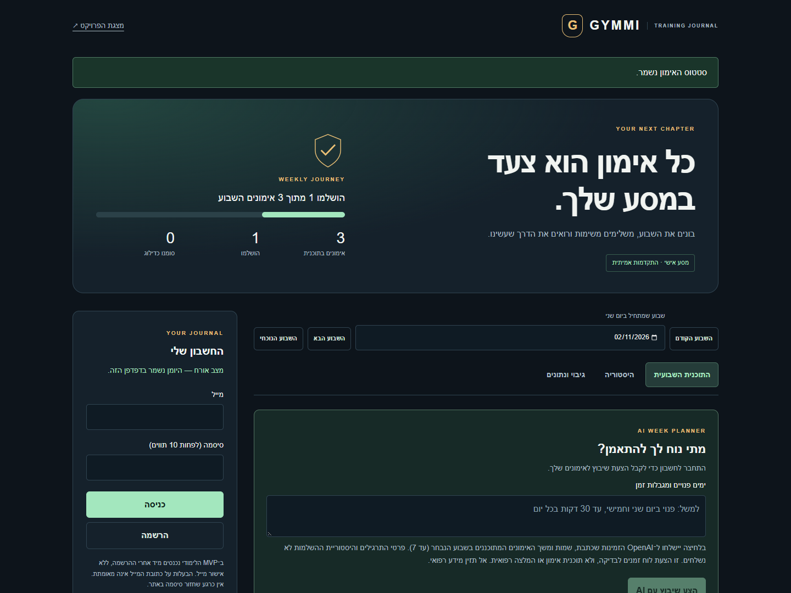
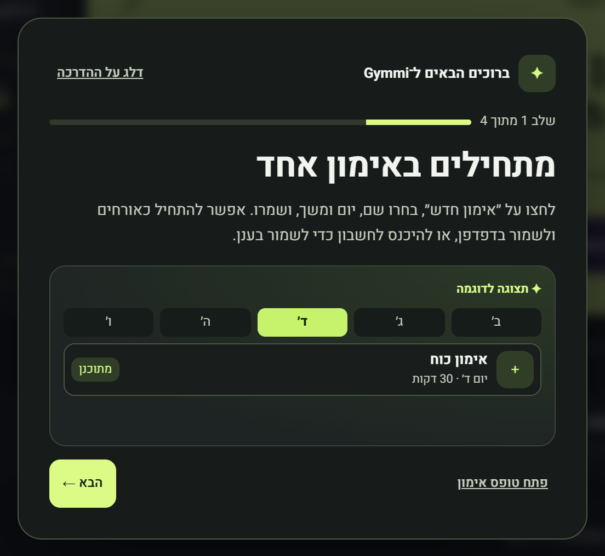
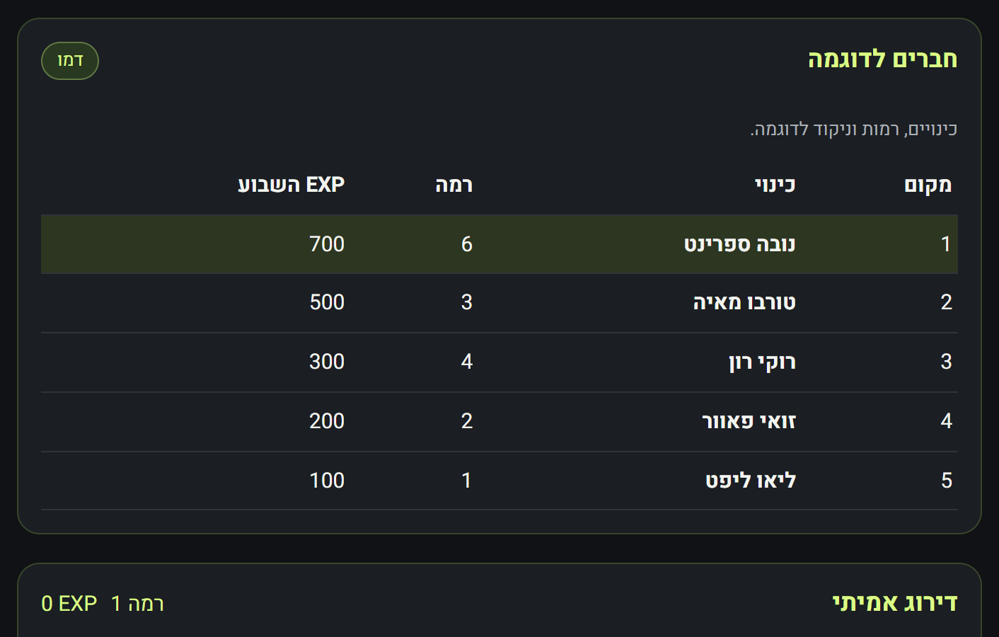
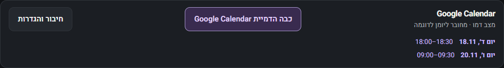
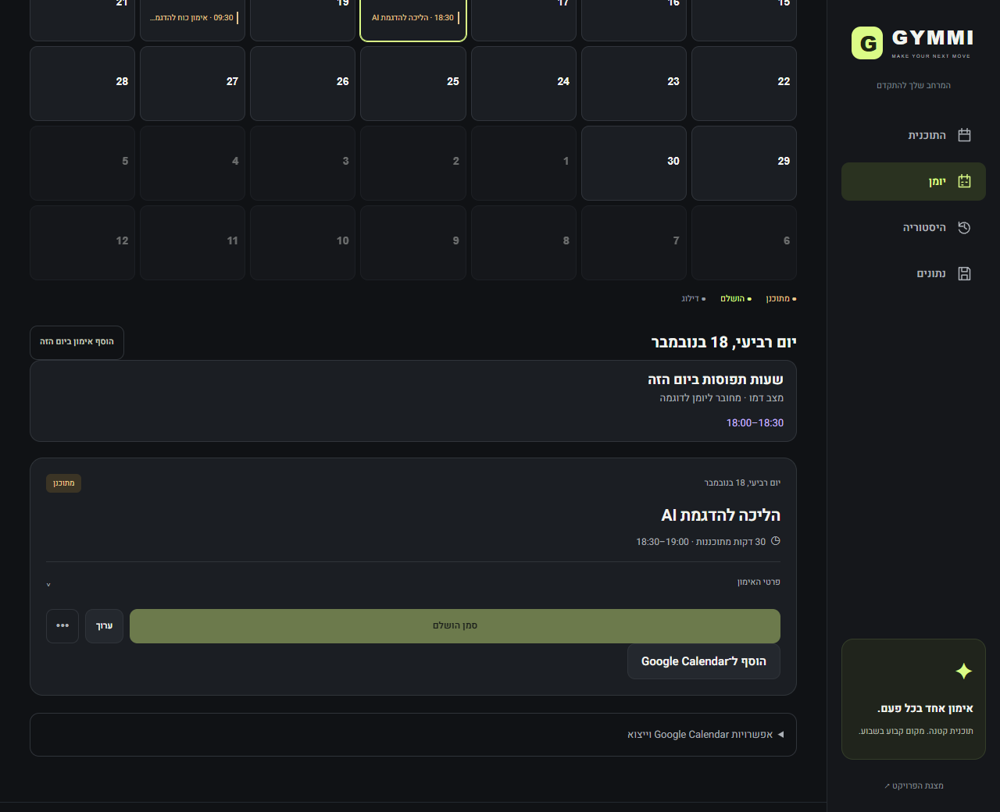
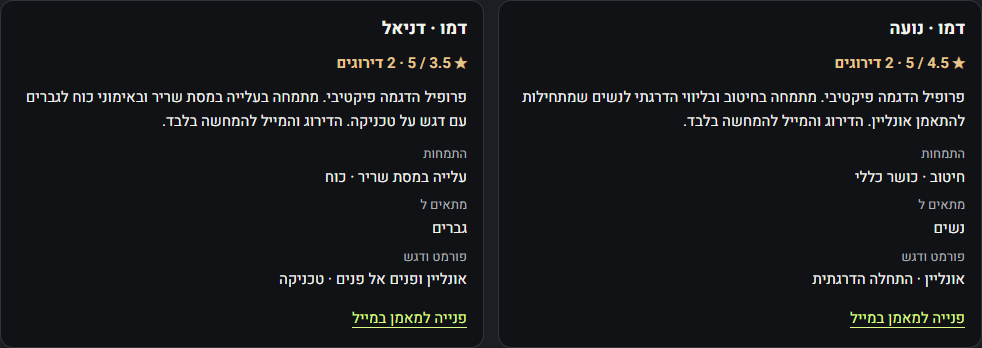

A workout journal with AI scheduling and coach matching
A public student MVP with a private cloud journal
Matan Roditi AI Development final project

The animated guide shows how to add a workout, schedule with AI, earn EXP and find a coach.
Add a workout to the weekly plan. Mark it complete to update your progress.
When signed in, reload to confirm the cloud save and find the workout in the monthly calendar.

Personal progress Each completed workout earns 100 EXP. Every 500 lifetime EXP adds one level.
Demo friends Five fictional profiles show levels and weekly EXP. Anyone can view the demo.
Live standings Signed-in users can opt in with a nickname. The top 20 are ranked by EXP earned Monday to Sunday, Israel time.

Browser app The weekly plan and monthly calendar read the same journal.
Supabase Auth identifies the user. Postgres stores the journal. RLS checks ownership.
OpenAI One function suggests workout dates. A second ranks eligible coaches from the directory.
Both Supabase Edge Functions call OpenAI. The API key stays in Supabase Secrets.

01 The demo calendar opens automatically for the demo account.
02 Busy hours appear on the dashboard and in the AI dialog.
03 The AI proposes Wednesday 18:30–19:00 and Friday 09:30–10:00.
04 The preview leaves the journal unchanged until approval.
Approval saves the workout dates and times to Supabase.
After a reload, the same schedule appears in the Gymmi calendar.
The Wednesday workout starts at 18:30, when the sample busy block ends.

| Area | Groups | Examples | Run scope | Result |
|---|---|---|---|---|
| Redesigned UI | 6 | Five viewport widths | Public app | Passed |
| EXP and weekly league | 4 | Two QA accounts | Local + backend | Passed |
| Cloud demo | 1 reload check | Completion survives reload | Public app | Passed |
| AI approval | 1 real call | Preview, approval, reload | Public app | Passed |
| Coach matching | 2 live calls | Different preferences and email drafts | Public app | Passed |
Workout dates and times changed only after approval and survived a reload.
The calendar demo avoided sample busy times and saved the schedule in Gymmi.
Two live questionnaires returned the expected demo coaches and the correct contact links.
Cursor is the code editor. Git records changes on a feature branch.
A commit records a change. Push uploads it to GitHub for a pull request.
Merge into main publishes docs/ through GitHub Pages. The server function deploys separately.
PR #1 adds the coach directory, rating flow and AI questionnaire.
01 Browse Compare specialties, audiences and member ratings.
02 Match Choose a goal, audience, format and coaching style. AI ranks eligible coaches and explains each match.
03 Contact Select a coach and open an email draft.

Production: public HTTPS app, GitHub source and cloud accounts.
AI proposes workout dates and ranks eligible coaches. Users choose what to save or whom to contact.
Google drafts and ICS export are available. The calendar demo uses sample busy times. A live Google connection requires OAuth setup.
Weekly competition uses self-reported workout completions.
Coaches self-publish their details. The two demo profiles and their ratings are fictional.
MVP limits: unverified emails, no password recovery and capped AI requests.
Built with coding-assistant support. I am responsible for explaining the code.